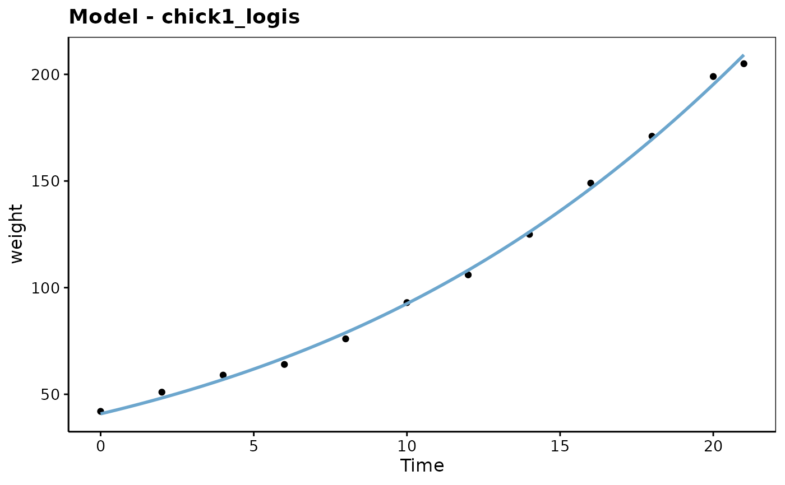
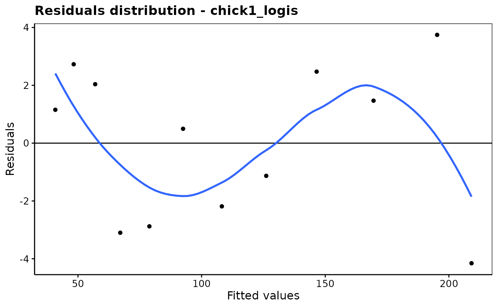
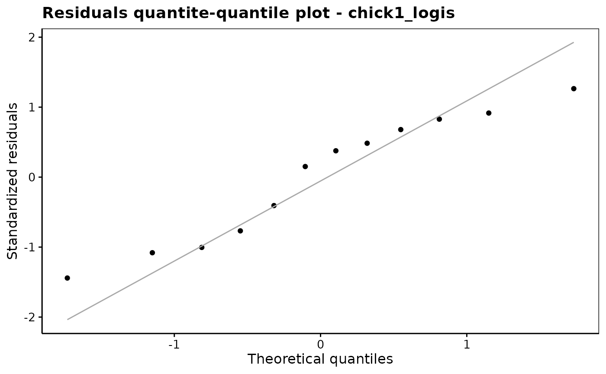
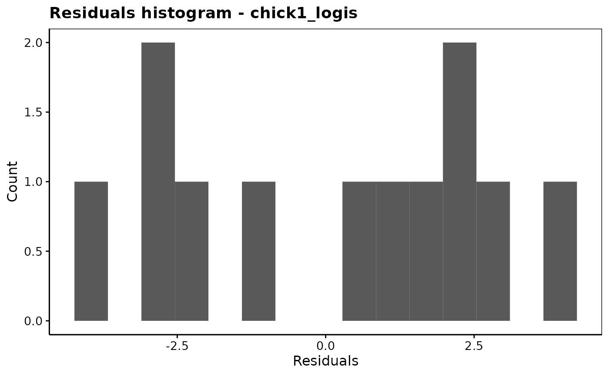
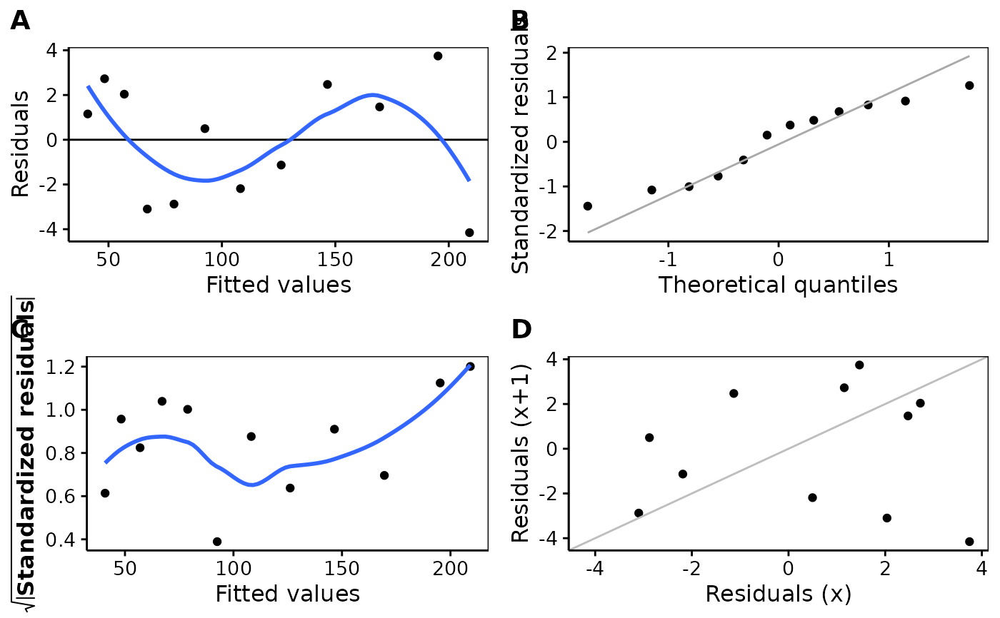
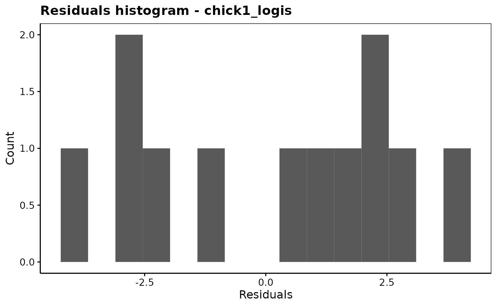
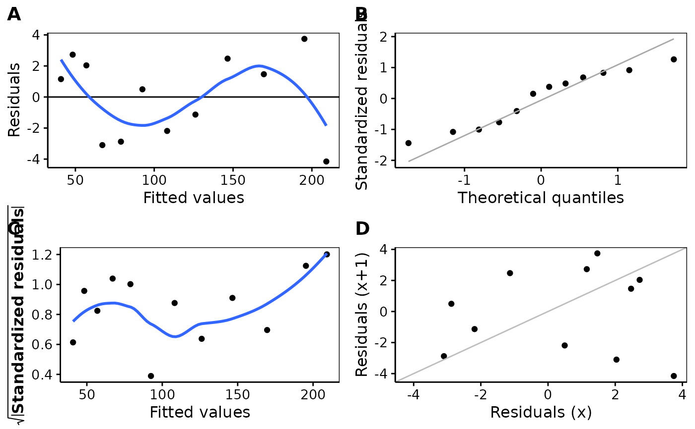

The methods autoplot() or chart() for nls objects. If
type = model (by default for chart()), a scatterplot with the model
superimposed is produced,. The other types allow to analyze the residuals of
the model.
Usage
# S3 method for nls
chart(
data,
type = "model",
...,
title,
labels = "AUTO",
name = deparse(substitute(data)),
lang = getOption("data.io_lang", "en"),
env = parent.frame()
)
autoplot.nls(
object,
type = c("model", "resfitted", "qqplot", "scalelocation", "reshist", "resautocor"),
title,
xlab,
ylab,
...,
name = deparse(substitute(object)),
lang = getOption("data.io_lang", "en"),
env = parent.frame()
)Arguments
- data
A nls model.
- type
The type of plot:
"model","resfitted","qqplot","scalelocation","reshist"or"resautocor". Forchart(), can also be provided aschart$type(....).chart()also uses"residuals"that constructs a combined figure with resfitted, qqplot, scalelocation and resautocor.- ...
Additional arguments passed to the chart.
- title
A title for the plot. If not provided, a default title is computed.
- labels
A vector of four character strings, one for each plot done with
chart$residuals().- name
The name of the model. If not provided, it is the name of the model object by default.
- lang
The language to use for titles and labels, currently only
"en"or"fr".- env
The environment to evaluate code. It is
parent.frame()by default, and there is no reasons to change it, unless you really know what you are doing!- object
Idem
- xlab
A label for the X axis. A default label is proposed if it is not provided.
- ylab
A label for the Y axis (with default if not provided).
Examples
data("ChickWeight", package = "datasets")
chick1 <- ChickWeight[ChickWeight$Chick == 1, ]
# Adjust a logistic curve
chick1_logis <- nls(weight ~ SSlogis(Time, Asym, xmid, scal), data = chick1)
library(chart)
chart(chick1_logis)

# Residuals analysis
chart$resfitted(chick1_logis)

chart$qqplot(chick1_logis)

chart$scalelocation(chick1_logis)
 chart$reshist(chick1_logis, bins = 15)

chart$resautocor(chick1_logis)
# The four most important residual analysis plots in one figure
chart$residuals(chick1_logis)

chart$reshist(chick1_logis, bins = 15)

chart$resautocor(chick1_logis)
# The four most important residual analysis plots in one figure
chart$residuals(chick1_logis)
